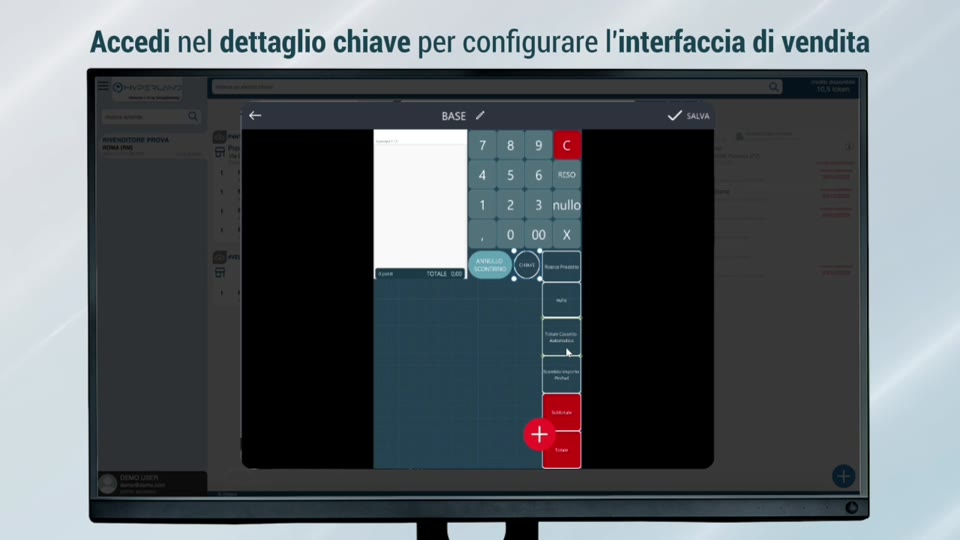
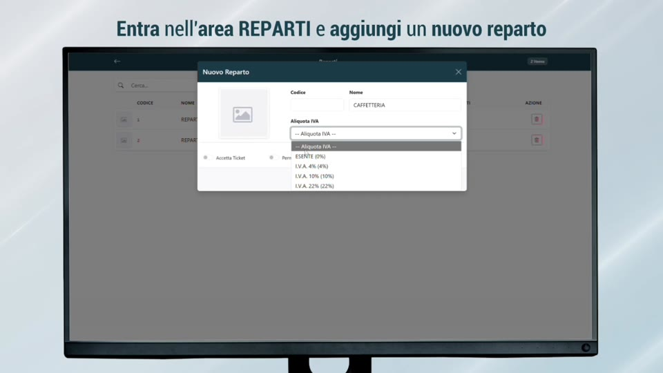
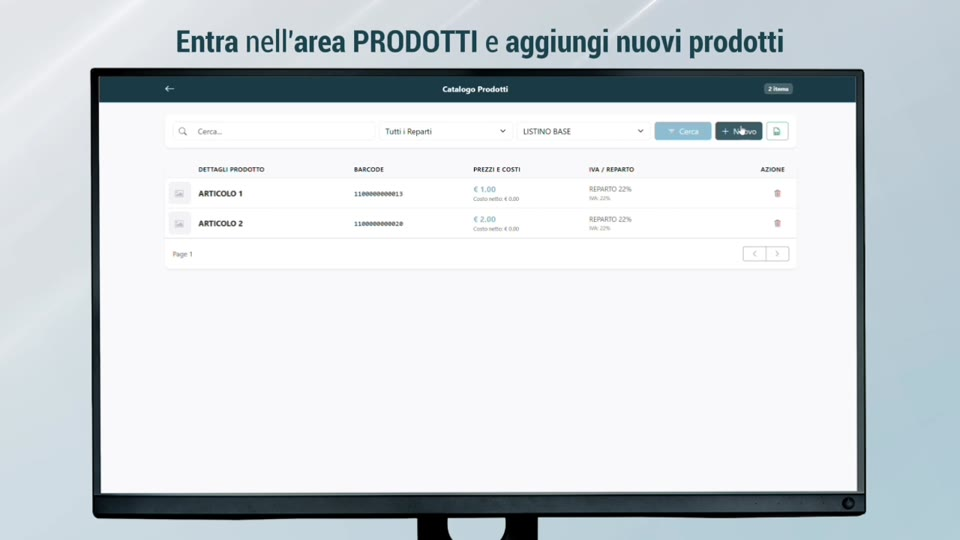
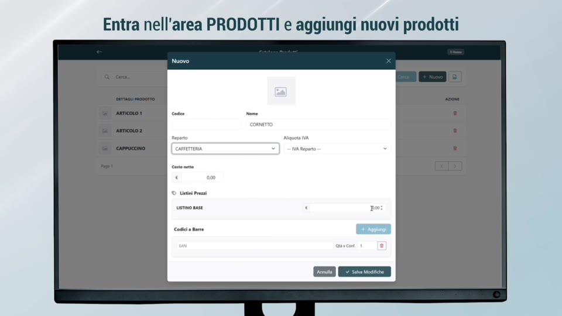

Tutorial — Inserimento Articoli e Reparti
HyperRetailCloud StartUp Level 1 | Custom S.p.A. © 2026
Questo tutorial mostra passo-passo come popolare l'anagrafica di HyperRetailCloud: creare i reparti merceologici e inserire gli articoli tramite barcode cloud dalla Web Console.
🎬 Video tutorial
Passo 1 — Accedere alla Web Console
La Web Console è il punto di partenza per tutta la gestione anagrafica. Si accede in due modi:
Da HyperLand (accesso partner):
- Apri HyperLand sul tuo dispositivo
- Seleziona la licenza del cliente dall'elenco chiavi
- Tocca "Dettaglio chiave" → tasto "Web Console HyperRetailCloud"

Da browser diretto (accesso cliente):
- Apri qualsiasi browser (Chrome, Safari, Edge...)
- Vai all'indirizzo: www.hyperetail.it/hypercloud
- Accedi con le credenziali del cliente — verifica l'email con il codice PIN ricevuto
Funziona su qualsiasi device
La Web Console è accessibile da PC, tablet e smartphone — Android, iOS, Windows. Non serve installare nulla.
Passo 2 — Creare i Reparti
I reparti sono le categorie merceologiche della cassa (es. Bar, Cucina, Tabacchi, Retail...). Vanno inseriti prima degli articoli, perché ogni prodotto deve essere assegnato a un reparto.
Procedura:
- Dalla homepage della Web Console, seleziona "Reparti"
- Tocca il tasto "+" (Aggiungi reparto)
- Compila i campi:
| Campo | Descrizione | Esempio |
|---|---|---|
| Nome reparto | Nome visualizzato sulla cassa | Bar, Cucina, Tabacchi |
| IVA | Aliquota IVA applicata | 10%, 22%, 0% |
| Colore | Colore identificativo sulla cassa | Scegli dalla palette |
| Icona | Icona grafica del reparto | Opzionale |
- Salva — il reparto è immediatamente disponibile sulla cassa

Quanti reparti creare?
Crea solo i reparti che il cliente usa effettivamente. Un bar semplice può avere 3-4 reparti (Bar, Cucina, Altro, Tabacchi). Non esagerare: una struttura semplice rende la cassa più veloce da usare.
Passo 3 — Inserire un Articolo via Barcode Cloud
L'inserimento articoli è il punto di forza della Web Console: il sistema recupera automaticamente dal cloud descrizioni e immagini del prodotto, lasciando all'operatore solo prezzo e reparto da compilare.
Procedura:
- Dalla homepage, seleziona "Prodotti" → tasto "+ Nuovo"
- Scansiona il barcode con la fotocamera del device, oppure digitalo manualmente nel campo EAN
- Il cloud riconosce il prodotto e propone automaticamente:
- Descrizione e nome commerciale
- Immagine del prodotto (più opzioni tra cui scegliere)
- Categoria di appartenenza

- Seleziona descrizione e immagine più adatte al cliente
- Compila i dati obbligatori:
| Campo | Obbligatorio | Note |
|---|---|---|
| Prezzo di vendita | ✅ Sì | Il prezzo a cui il cliente vende il prodotto |
| Reparto | ✅ Sì | Scegli tra i reparti creati al Passo 2 |
| IVA | Auto | Ereditata dal reparto, modificabile |
| Prezzo di acquisto | No | Utile per calcolo margini con HyperStore |
| Listini multipli | No | Prezzi differenziati (asporto, sera, ecc.) |
- Salva — l'articolo è disponibile immediatamente sulla cassa
Risultato
Il prodotto appare sulla cassa nel reparto selezionato, con immagine e prezzo corretti — senza aver digitato nulla manualmente.
Passo 4 — Inserire un Articolo Manualmente (senza barcode)
Per prodotti sfusi, preparazioni proprie o articoli senza barcode (es. caffè, cornetto, coperto):
- Tasto "+ Nuovo"
- Lascia il campo EAN vuoto (o inserisci un codice interno personalizzato)
- Digita manualmente:
- Nome articolo (es. "Caffè", "Cornetto Vuoto", "Coperto")
- Prezzo di vendita nel listino BASE
- Reparto di appartenenza

- Aggiungi un'immagine dal dispositivo (opzionale)
- Salva
Articoli rapidi per bar e ristorazione
Per un bar standard, crea prima gli articoli più venduti (caffè, cappuccino, cornetto, acqua, birra). Il resto si aggiunge in un secondo momento — la cassa è già utilizzabile dal giorno 1.
Passo 5 — Verificare il Risultato sulla Cassa
Dopo aver inserito reparti e articoli, verifica che tutto sia corretto direttamente dalla schermata di vendita:
- Sulla cassa del cliente, apri HyperRetailCloud
- Tocca il reparto appena creato — gli articoli assegnati compaiono nella griglia
- Tocca un articolo per aggiungerlo al conto — verifica che prezzo e IVA siano corretti
- Annulla il conto di prova senza emettere il documento
Sincronizzazione in tempo reale
Le modifiche dalla Web Console sono sincronizzate in tempo reale. Non è necessario riavviare la cassa: i prodotti compaiono immediatamente.
Riepilogo — Flusso completo
INSERIMENTO ANAGRAFICA — FLUSSO COMPLETO
=========================================
① Accedi alla Web Console
└─ Da HyperLand → Dettaglio Chiave → Web Console
└─ Oppure da browser: www.hyperetail.it/hypercloud
② Crea i Reparti
└─ Nome, IVA, colore
└─ Solo i reparti effettivamente usati dal cliente
③ Inserisci gli Articoli
└─ Via barcode → cloud propone descrizione e immagine automaticamente
└─ Oppure manuale per articoli senza EAN (caffè, preparazioni proprie)
└─ Compila solo prezzo e reparto
④ Verifica sulla Cassa
└─ Articoli compaiono in tempo reale, senza riavvio
└─ Test conto di prova → annulla senza emettere documento
← Cap. 2 — Anagrafiche e Schermate | Cap. 3 — Primo Accesso e Configurazione →
Custom S.p.A. © 2026 — Uso riservato ai partner autorizzati